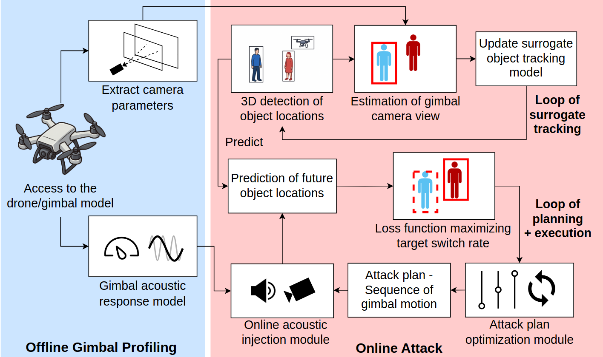
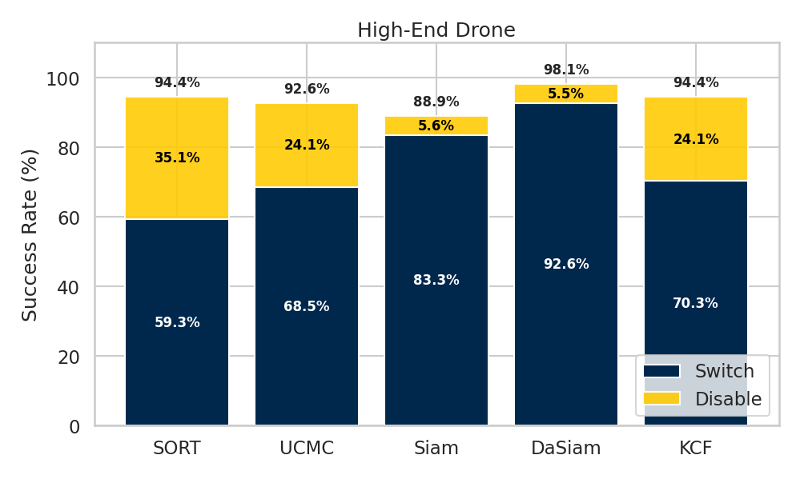
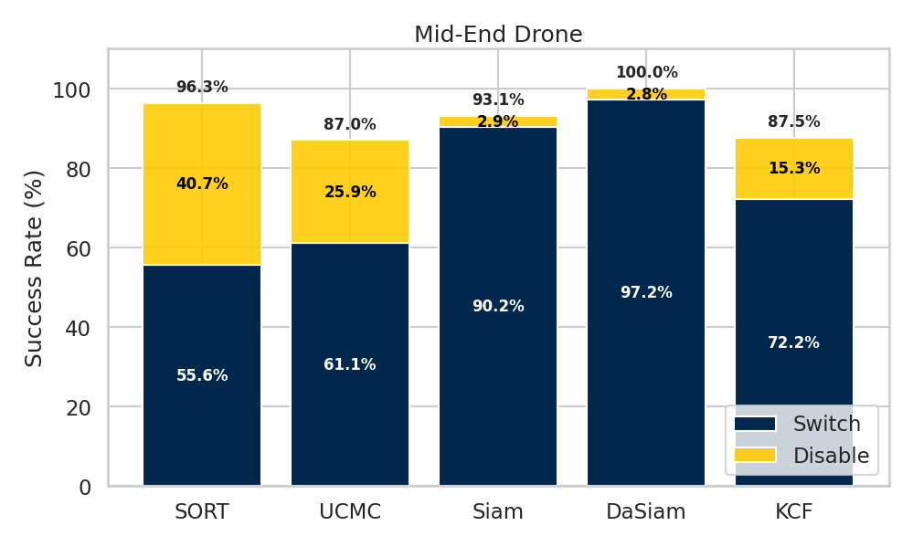
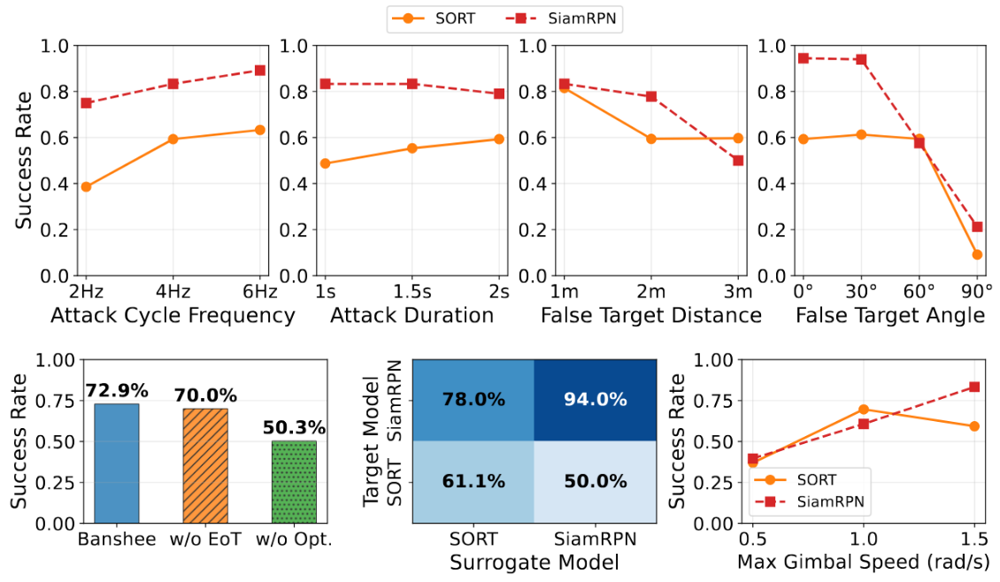
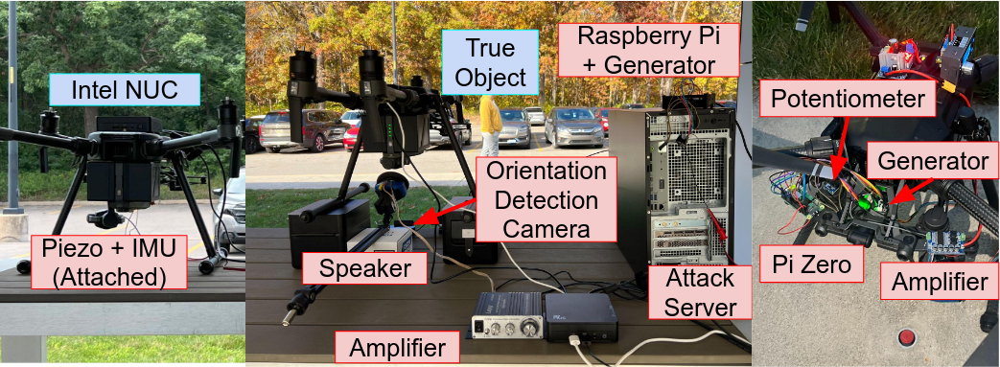
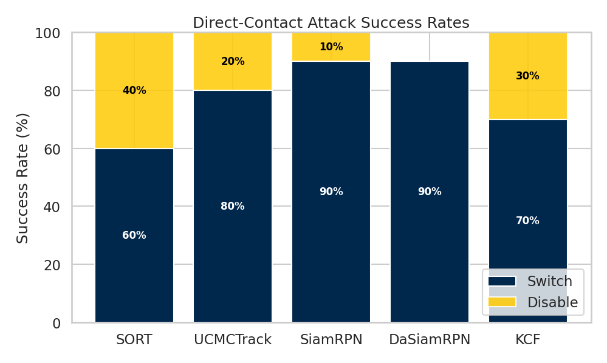
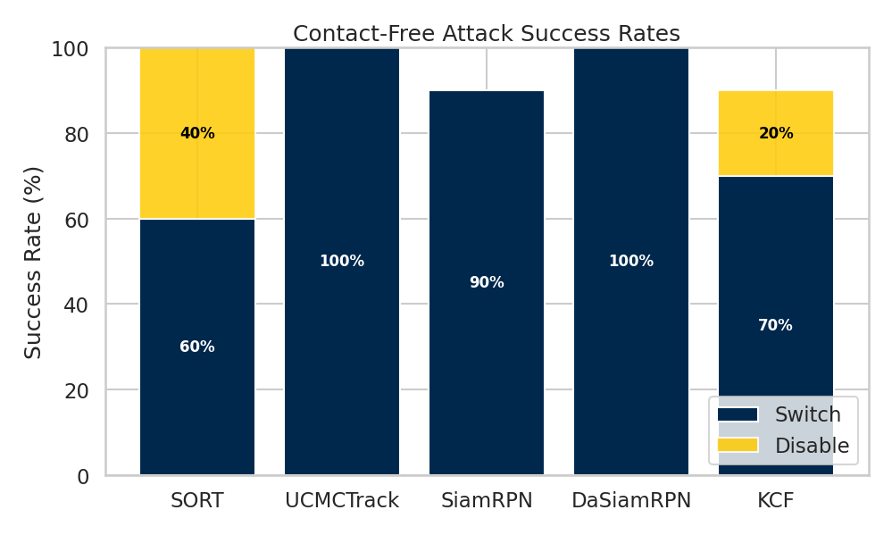

Gimbal-stabilized visual tracking is critical for modern autonomous systems such as Unmanned Aerial Vehicles (UAVs). While prior work shows acoustic signals can disturb gimbal internals, the impact of such attacks on real-world applications like UAV tracking and following remains underexplored. Existing demonstrations largely overlook practical challenges for real-world attacks, such as object-motion uncertainty and runtime latency. To bridge this gap, we present Banshee, the first physically realizable attack that induces target switching in UAV visual tracking systems by exploiting acoustic vulnerabilities in gimbal-camera systems. Banshee generates carefully crafted acoustic waveforms that induce optimized adversarial gimbal oscillations, causing directionally biased camera-view drifts that break inter-frame target associations. Consequently, the onboard tracker is driven to switch from the original target to an attacker-selected object with high probability, with occasional target loss. Banshee achieves a 93.6% success rate in simulation across two commercial gimbal systems and five trackers. Real-world benchtop and in-flight black-box attacks against a commercial drone across varied scenarios show an overall 95.5% attack success rate. Our results reveal a practical cross-domain vulnerability between acoustics and vision, highlighting the need for robust designs of gimbal systems and applications.

Banshee Overview. Banshee consists of an offline gimbal profiling procedure and an online optimized attack.


Banshee attack success rates. Banshee achieves high ASR in our simulated environment, successfully switching or disabling tracking on a UAV using two different profiles obtained through characterization fo two commercial UAV.

Ablation of attack factors and components. Results highlight the efficacy of our designed attack components and the robustness of our attack under varying attack conditions.

Testbed for real-world experiments. Our benchtop experiments include both direct-contact (left, using a PZT disc) and remote attacks (center, using a speaker), and our flight experiments feature a drone-mounted payload (right).


Results from real-world experiments. We achieve high success rates in our benchtop experiments, as shown in the figure, and a 60%/80% tracking switch/disable rate in flight testing.
@article{li2026banshee
author = {Li, Jiarui and Brewington, Joseph and Zhang, Qingzhao and Mao, Z. Morley},
title = {Banshee: Target Switch Attacks on Gimbal-Stabilized Visual Tracking Systems via Acoustic Injection},
journal = {IEEE Symposium on Security and Privacy},
year = {2026},
}